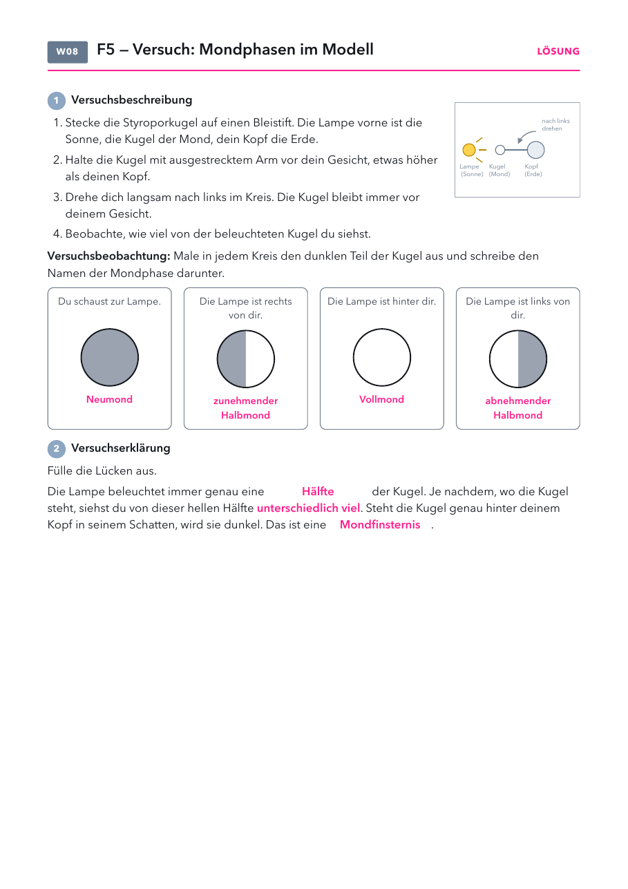

- Versuchsblatt: Kopiervorlage „2 auf 1“, halbe Klassenstärke drucken und in der Mitte durchschneiden.
- Folien und Lösungen: nicht drucken.
Material
Demo (für dich)
| Material | Anzahl | Hinweis |
|---|---|---|
| Tellurium beleuchtet (Phywe) | 1× | Mondphasen und Finsternisse vorne zeigen |
| helle Lampe ohne Schirm | 1× | als Sonne für den Schülerversuch, mitten im Raum oder vorne |
Schülerversuch (pro Gruppe)
| Material | Anzahl | Hinweis |
|---|---|---|
| Styroporkugel, etwa 5 cm | 1× | pro Paar, einer dreht sich, einer beobachtet mit |
| Bleistift oder Schaschlikspieß | 1× | als Griff für die Kugel |
Raum gut abdunkeln. Für die Lochkamera in der nächsten Stunde ankündigen: Chipsdose, Transparent- oder Butterbrotpapier, schwarzer Zeichenkarton, Schere, Kleber mitbringen.
Die Stunde
1 · Einstieg
2 · Tellurium
3 · Versuch
4 · Mondphasen
5 · Finsternisse
6 · Alltag, Antwort, Check
1
Einstieg
Vier Wochen Mond, Leitfrage 5, Vermutungen.
Vier Wochen Mond, Leitfrage 5, Vermutungen.
2
Tellurium
Vorne am Tellurium zeigen, wo der Mond steht. Folie dazu.
Vorne am Tellurium zeigen, wo der Mond steht. Folie dazu.
3
Versuch
Kopf, Kugel, Lampe in Paaren, Versuchsblatt.
Kopf, Kugel, Lampe in Paaren, Versuchsblatt.
4
Mondphasen
Phasen von der Erde aus, 29,5 Tage.
Phasen von der Erde aus, 29,5 Tage.
5
Finsternisse
Am Tellurium oder im Mondlabor, dann Folien.
Am Tellurium oder im Mondlabor, dann Folien.
6
Alltag, Antwort, Check
Alltag mündlich, Antwort ins Heft, Handzeichen.
Alltag mündlich, Antwort ins Heft, Handzeichen.
Folie 1
Beobachte
Vier Aufnahmen des Mondes im Abstand von je einer Woche. Was fällt dir auf?
Folie 2
Leitfrage 5
Warum sieht der Mond nicht immer gleich aus?

Was vermutest du? Wir sammeln eure Vermutungen.
Folie 3
8. Wo steht der Mond?
Der Mond ist ein beleuchteter Körper. Die Sonne beleuchtet immer genau eine Hälfte.
Auf seiner Bahn um die Erde sehen wir davon unterschiedlich viel.
Folie 4 · Schülerblatt mit Lösung
📄 Versuchsblatt austeilen · Versuch in Paaren

Folie 5
9. Die Mondphasen
So sehen wir den Mond von der Erde aus. Von Neumond bis zum nächsten Neumond
vergehen etwa 29,5 Tage.
Folie 6
10. Sonnenfinsternis
Bei einer Sonnenfinsternis steht der Mond zwischen Sonne und Erde.
Sein Kernschatten trifft die Erde. Nur dort ist die Sonne ganz verdeckt.
Folie 7
11. Mondfinsternis
Bei einer Mondfinsternis steht die Erde zwischen Sonne und Mond.
Der Mond taucht in den Kernschatten der Erde ein.
Folie 8
Mond und Finsternis im Alltag
| im Alltag | was man sieht | warum |
|---|---|---|
| Halbmond am Nachmittag | Mond am hellen Himmel | Die Sonne beleuchtet ihn auch tagsüber. Der zunehmende Halbmond steht nachmittags schon am Himmel. |
| Vollmond am Abend | Er geht auf, wenn die Sonne untergeht | Er steht der Sonne genau gegenüber. |
| Blutmond | Mond bei Mondfinsternis rötlich | Die Lufthülle der Erde lenkt etwas rotes Licht in den Erdschatten. |
| Finsternisbrille | Sonnenfinsternis nur mit Schutz ansehen | Das Sonnenlicht kann die Netzhaut dauerhaft schädigen. |
Frage: Warum darf man eine Mondfinsternis ohne Brille ansehen, eine Sonnenfinsternis aber nicht?
Antwort: Bei der Mondfinsternis schaut man auf den schwach beleuchteten Mond. Bei der Sonnenfinsternis blickt man in die Sonne, schon ihr schmaler Rand ist so hell, dass er die Netzhaut schädigt.
Antwort: Bei der Mondfinsternis schaut man auf den schwach beleuchteten Mond. Bei der Sonnenfinsternis blickt man in die Sonne, schon ihr schmaler Rand ist so hell, dass er die Netzhaut schädigt.
Folie 9
Antwort auf Leitfrage 5
Warum sieht der Mond nicht immer gleich aus?
Der Mond ist ein beleuchteter Körper. Die Sonne beleuchtet immer genau eine Hälfte.
Weil der Mond die Erde umläuft, sehen wir von dieser hellen Hälfte
unterschiedlich viel. Stehen Sonne, Erde und Mond auf einer Linie,
entsteht eine Finsternis.
Folie 10
Check zu Leitfrage 5
1) Warum können wir den Mond sehen?
- Er sendet eigenes Licht aus.
- Die Sonne beleuchtet ihn und er wirft das Licht zurück.
- Er glüht von innen.
- Die Erde beleuchtet ihn.
2) Bei einer Sonnenfinsternis …
- steht der Mond zwischen Sonne und Erde.
- steht die Erde zwischen Sonne und Mond.
- ist die Sonne für kurze Zeit erloschen.
- steht die Sonne zwischen Erde und Mond.
Folie 11
Lösung
1) b 2) a
Wo steht der Mond?
- Der Mond läuft in etwa 27,3 Tagen einmal um die Erde. Von Neumond bis Neumond dauert es 29,5 Tage, weil die Erde in dieser Zeit ein Stück um die Sonne weiterwandert.
- Umlaufsinn: Von Norden aus gesehen läuft der Mond gegen den Uhrzeigersinn. Liegt die Sonne in der Zeichnung links, steht der zunehmende Mond unten, der abnehmende oben.
- Tellurium: Zeigt Mondphasen und beide Finsternisse direkt vorne. Den Raum gut abdunkeln, dann ist die beleuchtete Hälfte klar zu sehen.
- Typische Fehlvorstellungen: Die Phasen entstehen durch den Erdschatten. Der Mond leuchtet selbst. Bei Neumond ist der Mond „weg“.
Tipps zum Versuch
- Eine helle Lampe ohne Schirm, sonst sind die Phasen blass. Raum ganz abdunkeln.
- Die Kugel etwas höher als den Kopf halten. Sonst steht sie bei „Lampe hinter dir“ im Kopfschatten, das ist dann eine Mondfinsternis. Das kann man gezielt als Zusatz zeigen.
- Drehen nach links, also gegen den Uhrzeigersinn. Dann stimmen die Phasen mit der Nordhalbkugel überein: Lampe rechts von dir heißt zunehmender Halbmond, rechte Seite hell.
- Das Buch zeigt auf S. 40 einen ähnlichen Versuch mit Globus, Lampe und einer Papierkugel am Faden.
Mondphasen
- Faustregel für die Nordhalbkugel: rechts hell heißt zunehmend, links hell heißt abnehmend. Auf der Südhalbkugel ist es umgekehrt.
- Der zunehmende Halbmond steht am Nachmittag und Abend am Himmel, der abnehmende am Morgen. Der Vollmond geht beim Sonnenuntergang auf.
Finsternisse
- Die Mondbahn ist um etwa 5° gegen die Erdbahn geneigt. Deshalb gibt es nicht bei jedem Neumond eine Sonnenfinsternis und nicht bei jedem Vollmond eine Mondfinsternis. Im Mondlabor lässt sich der Mond dafür nach oben und unten schieben.
- Der Kernschatten des Mondes ist auf der Erde höchstens rund 270 km breit. Eine totale Sonnenfinsternis sieht man deshalb nur in einem schmalen Streifen, eine Mondfinsternis dagegen überall, wo gerade Nacht ist.
- Blutmond: Die Lufthülle der Erde lenkt etwas Sonnenlicht in den Kernschatten. Dabei bleibt vor allem rotes Licht übrig, wie beim Sonnenuntergang.
- Sicherheit: Sonnenfinsternis nie ohne Finsternisbrille ansehen, auch keine normale Sonnenbrille. Eine Lochkamera ist ein sicherer Weg. Eine Mondfinsternis kann man ohne Schutz ansehen.
Mondlabor
Labor öffnenAlle LaboreMondbahn mit Regler für den Tag seit Neumond und der Ansicht von der Erde, euer Kugelversuch, Sonnenfinsternis mit schiefer Mondbahn, Mondfinsternis mit Blutmond. Auch für zu Hause.
Versuchsblatt Mondphasen im Modell
PDF öffnenKopiervorlage 2 auf 1Lösung: zur Lampe: Neumond (ganz dunkel). Lampe rechts: zunehmender Halbmond (rechts hell). Lampe hinter dir: Vollmond. Lampe links: abnehmender Halbmond (links hell). Lücken: Hälfte, unterschiedlich viel, Mondfinsternis.
Mondlabor
Labor öffnenDein H5P „Mondphasen Klasse 7“ liegt unter 04 Ressourcen/Physik/Mondphasen/H5P/ und passt als Wiederholung.